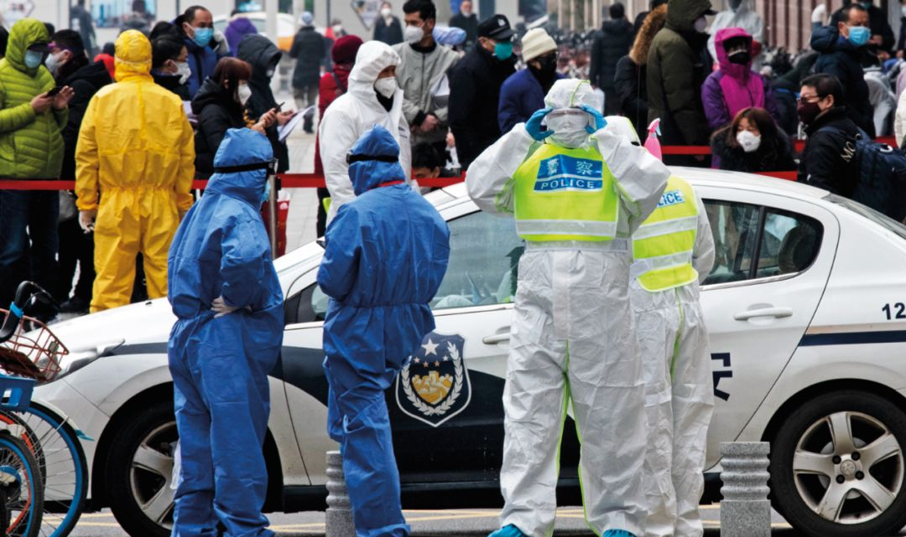
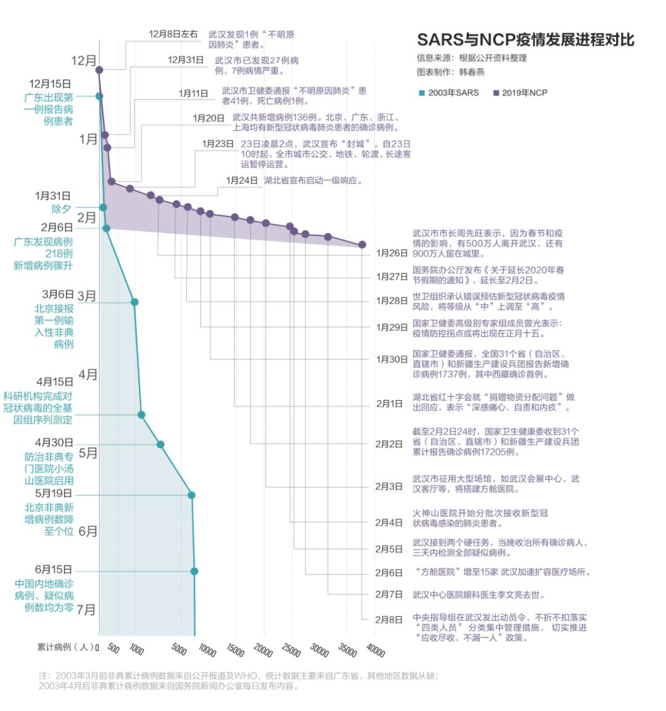

气溶胶传播新冠病毒？要重视，但不必恐慌
原文链接 备份链接 2月8日，上海市疫情防控工作领导小组举行的新闻发布会上，上海民政局副局长曾群表示，目前可以确定的新冠肺炎传播途径主要为直接传播、气溶胶传播和接触传播。 “气溶胶传播”被明确为新冠肺炎传播途径之一，引发了热议。就在3天 …

人类的发展史，就是疾病的增加史

2月1日，武汉市汉口新华路上，在疑似新型冠状病毒感染者排队确诊的队伍旁，一名现场维持秩序的警察正在做防护准备。摄影/长江日报 金思柳
认识一下“新冠君”，人类疾病的新成员
*本刊记**者/彭丹妮*
发于2020.2.17总第935期《中国新闻周刊》
2月8日，国家卫健委宣布，新型冠状病毒感染的肺炎暂命名为“新型冠状病毒肺炎”，简称“新冠肺炎”，英文简称“NCP”。而钟南山等人次日在最新的预印稿论文中，则将这种疾病命名为“2019新型冠状病毒感染的急性呼吸道疾病（2019-nCov ARD）”——因为并非所有感染者都表现出了肺炎的症状，而该名称涵盖那些病毒检测阳性、有症状但无明显影像学表现的患者。
就像命名背后所蕴含的对该病毒所致疾病的认识在不断刷新一样，新冠疫情的蔓延已经过去一月有余，与疫情大暴发初期相比，参与一线治疗的医护人员在病人尤其是危重症病人救治过程中，逐渐对这个全新的传染病有了初步的认识。
诊断标准之争
1月30日，一位患者到北京中日友好医院发热门诊就诊，入院前3次咽拭子的新冠病毒核酸检测均为阴性，而甲流核酸检测阳性。由于当时他的肺炎症状较重，故以“重症甲流”收治进了医院负压单间病房，并接受有创呼吸支持。然而，在随后治疗中，医院对其进行肺泡灌洗并取标本，2月5日，核酸检测结果显示其新冠病毒为阳性并最终确诊。
北京佑安医院感染综合科主任梁连春在接受《健康报》采访时表示，多次咽拭子检测阴性而下呼吸道标本检测阳性的患者，在湖北地区已并不算罕见。“如果类似患者被收治在普通病房，无疑将造成很严重的后果，并且对医院来说，会造成医务人员因隔离而减员。”
“假阴性”患者的存在，给感染者病情的及时治疗、医疗机构和医护人员恰当的应对与隔离措施都带来了挑战，因此，检验科室与临床医生们积极讨论和呼吁，应该对新冠肺炎的确诊标准进行调整。
呼吸与危重症专家、中国医学科学院院长王辰2月5日接受央视采访时指出，现在对于病毒核酸的检测能力在不断提升，但不同的试剂之间精准程度有差别，并不是所有患者都能检测出核酸阳性。所以有大量有接触史，临床症状也像是，但是核酸未能得到确证的病人，现在被列为疑似病例。王辰说，“我建议在武汉（如果）出现这样的病人，应当可以列为临床诊断病例，因为核酸对于已确诊的病人阳性率也只在30％～50％之间，因此设出临床诊断这个档级是非常有必要的。”
一位不愿具名的微生物学专家告诉《中国新闻周刊》，核酸检测“假阴性”有试剂的原因，也有标本的原因，有个体差异，也有病毒自身特点的原因。“其实有时候可能真不是试剂的事，就是采样没采到、采得不够好，或者标本运输过程当中时间太长病毒降解等等，不能一概而论。”
检查新冠病毒需要做呼吸道样本取样，包括咽拭子、鼻咽拭子、鼻咽抽取物、痰液、呼吸道抽取物、支气管灌洗液、肺泡灌洗液等均可。目前，新冠肺炎的核酸检测以咽拭子为主，即咽部的分泌物。由于新冠病毒的特殊性，不同的采样部位对检出率有很大影响。
“因为下呼吸道病毒量大些，所以在肺部采样也就是采肺泡灌洗液的阳性率高些。”武汉同济医院呼吸与危重症医学科主任赵建平告诉《中国新闻周刊》，但这种采样方式不现实，因此，一定要综合考虑病人的症状、胸部的影像学以及病程的情况。
2月3日，武汉大学中南医院影像科副主任张笑春发了一条朋友圈：“别迷信核酸检测了，强烈推荐CT影像作为目前 2019-nCoV 肺炎主要依据。”对此，多位临床医生表示，影像学代替不了病原学检查，CT只提示“可能”，确诊则需要核酸。中华医学会内科学分会前任主任委员、解放军总医院第一医学中心呼吸科主任医师刘又宁撰文指出，CT很难鉴别致病原，特别是腺病毒、支原体肺炎等CT表现与新型冠状病毒很相似。
2月5日，国家卫健委发布《新型冠状病毒感染的肺炎诊疗方案（试行第五版）》，其中最主要的一个变化是，将湖北省和其他省份的诊断分类标准区分开来。在湖北省，将原本的疑似病例标准拆分，原本的“老三条”：发热、白细胞或淋巴细胞减少、肺部CT影像，被一分为二，只要满足前两条即可视为“疑似”，相当于放宽了疑似的标准。但同时，将第三条肺部CT表现视为“临床诊断”，为湖北新增的一类诊断类别。这为CT和试剂盒的争论暂时画上了句号。
对疾病的了解露出了冰山一角
许多复杂的新情况正在不断挑战人们对新冠肺炎的已有认识。比如，钟南山等人最新的研究发现，新冠肺炎病人的中位潜伏期为3天，然而亦发现有个别病例最长可达24天；再比如，2月10日，广西与河南披露了两例无症状感染者病例，无症状表现分别达到16天和17天。
武汉大学中南医院重症医学科彭志勇等人2月7日在知名医学期刊《美国医学会杂志（JAMA）》上发表的文献对该院138例入院NCP患者进行回顾性分析发现，常见症状包括发烧（98.6％）、疲惫（69.6％）和干咳（59.4％）。
然而，与人们将发烧作为感染最为显性的标志不同，2月9日，钟南山等人在医学研究论文预印本平台 medRxiv上发文，总结分析了截至1月29日来自31个省份552家医院的共计1099例患者样本，发现在就诊时，亦即患者感染新冠病毒早期，仅约44％的患者发烧，但住院后发热比例达到88％。
对于重症病人来说，留给医生们抢夺生命的时间只有一两周。彭志勇等人基于武汉中南医院的病例研究发现，从症状首发到发展为呼吸困难平均是6天，到入院的平均时间是7天，到急性呼吸窘迫综合征（ARDS）的时间则平均为8天。
武汉同济医院ICU主任赵建平告诉《中国新闻周刊》，与以前的病毒性肺炎相比，NCP患者刚开始很平缓，过一段时间，往往在7～10天之后，有些人突发病情加重，甚至于两三天就会危及生命。北京协和医院内科ICU主任杜斌也表示，不少病例在发病初期，只有发热、无力等较轻微症状，但到第二周，有15％～20％的患者症状会突然加重，出现呼吸衰竭等症状。
杜斌估算，此次新冠肺炎危重症患者的总体病死率在10％～20％；接管武汉红十字会医院的四川省人民医院ICU主任黄晓波认为，危重症病死率是15％左右；武汉大学中南医院重症医学科主任彭志勇依据该院病例数据统计得出的危重症病死率是20％左右。
在整体的病死率上，彭志勇等人根据本院病例的研究给出的统计数据是4.3％；钟南山等人的研究则给出了1.36％的病死率，不过后者的确诊样本涉及的范围更广，其中武汉当地居民有483人，占研究总病例的44％。刘又宁则指出，截至2月6日，湖北以外地区确诊人数已达8000余人，但死亡人数为15人，病死率为0.18％，特别是浙江、江苏这些省份，发病人数已近千人，却没有出现死亡。
赵建平解释说，武汉地区病死率偏高，原因来自两方面：首先，该病毒传染性强，感染者增长迅速，挤兑当地医疗资源，一些病人不能及时入院治疗；其次，没有有效药物阻止患者从轻症向重症的发展。
对于特效药，根据前期的结果，人们对吉列德公司的抗病毒药物瑞德西韦抱有比较大的希望，其他药物包括中药，都需要进一步的临床观察来确定其疗效。华山医院感染科主任、上海医疗救治专家组组长张文宏在接受采访时说，“最有效的药物，是人的免疫力。我们医生在做什么？就是帮病人挺过两个礼拜，挺过去，他自身的抗体就起来了，有了强大的力量。”

彭志勇也告诉《中国新闻周刊》，对于重症病人，现在的治疗策略就是维持，最重要就是保证吸氧，这包括无创和有创的呼吸机等，同时应对病人的多种并发症，保证器官功能的运转，剩下的就要看病人的免疫力和体力。病毒不断复制，攻击免疫系统，因此如果一个病人淋巴细胞很低，他活下来的可能性就比较低。
然而，免疫能力，既是人体对抗新冠病毒侵扰的武器，也被认为可能会引起对自身的攻击。引起亿万网友关注的武汉市中心医院眼科医生李文亮，年仅34岁就因患新冠肺炎而去世。1月31日，《中国新闻周刊》还曾在线采访了正在ICU接受治疗的李文亮。当时，医生告诉他，病情的拐点就在这几天了，但肺功能恢复还需要一段时间。但在2月6日晚间，突然传出李文亮病情恶化在抢救的消息，并在次日凌晨撒手人寰。
这种年轻、健康状况良好但突然病危的情况并非孤例。对此，部分专业人士给出的一种可能解释是“细胞因子风暴”，这种说法认为年轻人免疫系统更强，对病毒入侵反应更为剧烈，继而因为过分免疫反应造成对自身多个器官的伤害。不过，彭志勇认为这只是一种理论。
赵建平则告诉《中国新闻周刊》，还是病人体内的病毒没有很好地清除，所以一段时间之后病毒又繁殖复制，病情继而加重。“李文亮当时的情况，绝对不是好转了很多又恶化的，而是处于一种稍稍比以前可能稳定一点的一种相持阶段，有一段时间稍微缓解一点。”
“由于我们对新冠病毒发病机理还不了解，多器官受损究竟是由于新冠病毒自身毒性导致，还是病毒侵害机体导致其他病菌进入出现这些并发症，目前尚不得而知，也没有任何特效药。”杜斌接受媒体采访时表示，而这都给重症尤其是危重症新冠肺炎病人的抢救、监护工作带来很大难题。
传播途径再认识
2月5日，国家卫健委网站公布的《新型冠状病毒感染的肺炎诊疗方案（试行第五版）》中，对病毒传播途径的描述在先前的“经呼吸道飞沫和接触传播是主要的传播途径”基础上，增加了新的表述——“气溶胶和消化道等传染途径尚待明确”。气溶胶传播是指飞沫混合在空气中，形成气溶胶，吸入后导致感染。

2月6日，武汉东湖高新区，在“火眼”实验室的自动化提取室内，华大智造的SP-960样本处理工作站正在进行自动化核酸提取。摄影/长江日报 周超
而2月8日上海市疫情防控工作领导小组的发布会上，卫生防疫专家则直接定调称，目前可以确定的新冠肺炎传播途径主要为直接传播、气溶胶传播和接触传播。气溶胶传播就意味着空气里都有病毒，那么宅在家里或者走在空旷路上这些安全的场景，都将变得危险起来。
有研究显示，一次打喷嚏可以呼出40万～200万颗飞沫，相比之下，一次咳嗽大概呼出10万颗飞沫，而大声说话呼出约3000颗飞沫，飞沫的粒径范围分布在1～2000微米。一位微生物学专家告诉《中国新闻周刊》，“像咱们打一个喷嚏，肯定有大颗粒、有小颗粒，气溶胶是指在空气当中能漂浮的、个头在0.2～10个微米左右的小颗粒。”
在“非典”期间，香港淘大花园曾发生过疫情集中暴发的情况。该小区E座发生321人感染SARS病毒，致死42人，被认为极大可能性是气溶胶传播。具体来说：感染了病毒的排泄物在上百米高的污水管道中下落，与气流的相互作用也形成一个雾化过程，这些雾滴通过8楼的管道裂缝和几家住户没有被水封好的U型管逃逸，最终蒸发成为气溶胶形式的感染源。
与之相关的是，在稍早一些，因在患者粪便中检测到病毒核酸阳性，“粪口传播”的可能性也受到关注。根据深圳卫健委的消息，2月1日，深圳市第三人民医院肝病研究所发现，在某些新型冠状病毒感染的肺炎确诊患者的粪便中检测出新型冠状病毒阳性，这意味着在这些患者的粪便中有可能存在活病毒。
前述微生物学专家指出，冠状病毒都在肠道里复制，所以才会导致一些腹泻等症状，因此，粪便作为传播途径是非常有可能的，但是具体在这个病毒上发挥了多大作用，目前还不清楚。
东南大学能源与环境学院教授钱华解释，如果病人的大便中带有病毒，冲厕所时也会形成带病毒的生物气溶胶。这些带病毒的飞沫，及蒸发干后形成的飞沫核被易感人吸入，或者接触到眼结膜、鼻黏膜、口黏膜，就有可能形成感染。不过，刘又宁指出，目前为止支持粪口感染的主要证据仍局限于在数例患者粪便中发现了新冠病毒核酸，此发现离最终证实有粪口传染距离尚远。粪口传染不大可能成为该病毒主要传播途径。
前述微生物学专家对《中国新闻周刊》表示，如果有感染者打个喷嚏，病毒在公园里就能飘着到处感染人了，这不现实，因为感染需要一定的条件，一定病毒的量。“不要听到气溶胶传播就害怕，没有病毒的空气是不存在的。即使空气中有少量的病毒，也是安全的，只有一段时间内，待在一定病毒浓度高的环境中，才有可能感染。”
2月9日，中国疾控中心传染病处研究员冯录召对该问题进行了解答。他表示，新冠肺炎目前还是主要通过飞沫传播和接触传播的疾病，在某些特殊的条件下才可能发生气溶胶传播。他进一步解释称，“某些特殊的条件下才可能发生气溶胶传播，例如进行临床气管插管等专业医疗操作时。如果是在常规临床护理、一般的工作生活条件下，采取正确佩戴口罩的飞沫传播防护措施，是足以保护普通公众不被感染的。”
至此，所谓“气溶胶传播”，这个在大疫当前的情况下惊吓了不少人的问题，总算是有了一个令人心安的说法。
值班编辑：石若萧
封面报道之一
《新冠病毒——我们要付出多大代价》
（由5篇报道组成）
*点击下图，一键下单*

封面报道之二
《围城之战——我们如何过关》
（由6篇报道组成）
***点击下图，一键下单***

原文链接 备份链接 2月8日，上海市疫情防控工作领导小组举行的新闻发布会上，上海民政局副局长曾群表示，目前可以确定的新冠肺炎传播途径主要为直接传播、气溶胶传播和接触传播。 “气溶胶传播”被明确为新冠肺炎传播途径之一，引发了热议。就在3天 …
原文链接 备份链接 Original 人物记者 人物 人物 Today 在一场庞大的对抗病毒的战役中，有一部分人被置于尴尬和灰色的境地。 《人物》记者对三位新冠肺炎疫情中的透析病人家属进行了采访，一位家属说：「在这个过程中，大家永远看到的 …
原文链接 备份链接 _ 气溶胶、消化道是否为传播途径在新冠肺炎疫情中牵动人心，在等待医学界给出明确答案时，必要的防护仍是关键，但防护过度则大可不必 _ 文 |《财经》记者 信娜 孙爱民 实习记者 朱贺 **图 | 李斯洋 ** 编辑 | …
原文链接 备份链接 _ 新冠肺炎核酸检测阳性比率低，与病情发展阶段、采集流程是否规范、试剂盒的质量相关。为减少可能的“漏诊”，专家建议对不同厂商的试剂盒进行系统对比 _ 文 |《财经》记者 孙爱民 言清 王小 编辑 | 王小 近日在湖北 …
原文链接 备份链接 实习生 赵雨萌 澎湃新闻记者 薛莎莎 “如果孕妈妈不幸感染，要保持好心态，吃好睡好，要相信宝宝一定会没事，也要相信自己会康复。”2月12日下午，澎湃新闻联系到许佳（化名）时，她如是说道。 许佳的检测报告显示双肺感染。受 …